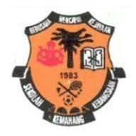
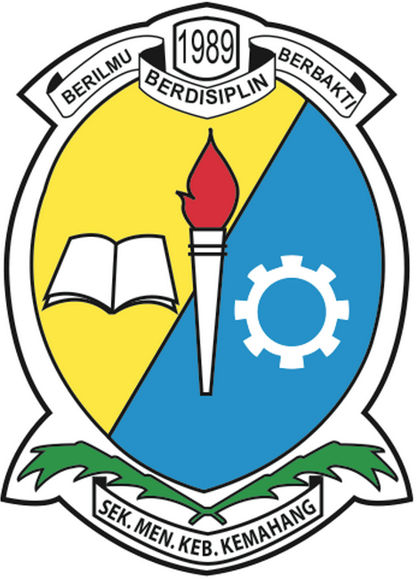
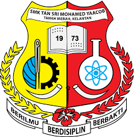

HELLO, WELCOME!
Hey, this is my
"LEARNING JOURNEY"
HOME
BIOGRAPHY
EDUCATION
BLOODLINE
EXPERIENCE
GALLERY
INQUIRIES
"I have not failed,
I've just found 10,000 ways that doesn't work."
PRIMARY SCHOOL:

SEKOLAH KEBANGSAAN KEMAHANG 1
FELDA KEMAHANG 1, 17500 TANAH MERAH, KELANTAN.
I received my early education from this primary school from standard one until standard six. I have also taken my UPSR exam at this school. So many memories in this primary school, and most of my childhood memories that were created there with my lovely childhood friends. I have been completed my schooling at this school from 2006 until 2011 and here i attached my Primary School Achievement Test also known as UPSR result. And for standard one until standard six, I was in the second class which is Gemilang.
Primary School Achievement Test / UPSR
| SUBJECT |
GRADE |
BAHASA MELAYU (PEMAHAMAN)
BAHASA MELAYU (PENULISAN)
BAHASA INGGERIS
MATHEMATICS
SCIENCE
|
A
A
B
B
A
|
SECONDARY SCHOOL:

SEKOLAH MENENGAH KEBANGSAAN KEMAHANG,
JALAN MASJID, JALAN FELDA KEMAHANG, 17500 TANAH MERAH, KELANTAN.
Next, I received my education at this secondary school from 2012 until 2016 means from form one to form five. And also, in this school there are a lot of bitter and sweet memories with my friends that I spend almost every day because of extra classes and so on due to examination. This place also have many created unforgettable memories with my beloved friends but my results was so bad in secondary school because I did not focus in class and always playing around. Here I also attached my result during PT3 and SPM. For your information, we are the very first batch of PT3 students. From form one until form three, I was in the second class, Natalia's class. And for form four and five, I took the science stream and occupied the first class which was the Alpha class.
Form Three Assessment / PT3
| SUBJECT |
GRADE |
BAHASA MELAYU UJIAN BERTULIS
BAHASA MELAYU (LISAN)
BAHASA INGGERIS UJIAN BERTULIS
BAHASA INGGERIS (LISAN)
SEJARAH
GEOGRAFI
PENDIDIKAN ISLAM
MATHEMATICS
SCIENCE
KEMAHIRAN HIDUP BERSEPADU
|
C
C
E
D
A
A
D
D
E
D
|
Malaysian Certificate of Education / SPM
| SUBJECT |
GRADE |
BAHASA MELAYU
BAHASA INGGERIS
PENDIDIKAN ISLAM
SEJARAH
MATHEMATICS
ADDITIONAL MATHEMATIC
PRINSIP AKAUN
PHYSICS
CHEMISTRY
|
A-
B
B+
C+
C+
G
D
E
E
|

SEKOLAH MENENGAH KEBANGSAAN TAN SRI MOHAMED YAACOB,
KM25, TIMUR-BARAT HIGHWAY, 17500 TANAH MERAH, KELANTAN.
Then I continued my studies to SMKTSMY high school which is to continue my form six session. I received my education in this school for one and half year from 2018 until 2019 because I want to enter university. I did not receive any offer to go to the university level because my SPM results were not encouraging. This has caused me to have to continue to form six and yes, I did my best for my Malaysian Higher School Certificate or commonly known as STPM. In my form six, I was in the first class but taking classes in the literary stream. And for this i also was in the first class but in the literary stream.
Malaysian Higher School Certificate / STPM
| SUBJECT |
GRADE |
PENGAJIAN AM
BAHASA MELAYU
GEOGRAFI
ECONOMICS
|
A-
A-
A-
C+
|
UNIVERSITY :
UNIVERSITI TEKNOLOGI MARA,
CAWANGAN MACHANG,
BUKIT ILMU, 18500 MACHANG, KELANTAN.
And now, I further my studies in university since February, 2020 and currently in semester two Bachelor in Office Systems Management (Hons.)